1. Introducción a canvas
<canvas> 是 HTML5Nuevo, un elemento que puede usar scripts (normalmenteJavaScript) para dibujar imágenes en élHTMLelemento. Se puede utilizar para hacer álbumes de fotos o animaciones simples (no tan simples), e incluso para procesamiento y renderizado de video en tiempo real.
Originalmente fue utilizado internamente por Apple con su propioMacOS X WebKitlanzado, para que las aplicaciones usen componentes como tableros ySafariuso en el navegador. Más tarde, alguien a través deGeckonavegadores con kernel (especialmenteMozilla和Firefox)，Opera 和 Chromey el grupo de trabajo de tecnología de aplicaciones de red de hipertexto (WHATWG) recomendó usar este elemento para la próxima generación de tecnologías web.
Canvasestá definido porHTMLcódigo junto con los atributos de altura y ancho que definen un área dibujable.JavaScriptEl código puede acceder a esta área, similar a otras API 2DAPI, a través de un conjunto completo de funciones de dibujo para generar gráficos dinámicamente.
Los programas de Mozilla comenzaron a soportarlo desde Gecko 1.8 (Firefox 1.5)<canvas>, Internet Explorer desde IE9<canvas>. Chrome y Opera 9+ también lo soportan.<canvas>。
2. Uso básico de Canvas
<canvas id="tutorial" width="300" height="300"></canvas>
2.1 <canvas>elemento
<canvas>Se ve igual que<img>la etiqueta, solo que<canvas>solo tiene dos atributos opcionaleswidth、heigthatributos, y no tienesrc、altatributos.
Si no se le<canvas>establecewidht、heightel atributo, entonces por defectowidthes 300,heightes 150, la unidad espx. También se puede usarcssla propiedad para establecer el ancho y alto, pero si la propiedad de ancho y alto no coincide con la proporción inicial, se distorsionará. Por lo tanto, se recomienda nunca usarcssla propiedad para establecer<canvas>el ancho y alto del canvas.
Contenido alternativo
Debido a que algunos navegadores antiguos (especialmente IE anterior a IE9) o navegadores que no soportan el elemento HTML<canvas>, en estos navegadores deberías poder mostrar siempre contenido alternativo.
Los que soportan<canvas>los navegadores solo renderizarán la etiqueta<canvas>, e ignoran el contenido alternativo. Los que no soportan<canvas>los navegadores renderizarán directamente el contenido alternativo.
Reemplazar con texto:
<canvas>
你的浏览器不支持 canvas，请升级你的浏览器。
</canvas>
用 <img>Reemplazar:
<canvas>
<img src="./美女.jpg.html" alt="">
</canvas>
Etiqueta de cierre</canvas>no se puede omitir.
与 <img>A diferencia del elemento,<canvas>el elemento necesita una etiqueta de cierre (</canvas>). Si la etiqueta de cierre no existe, el resto del documento se considerará contenido alternativo y no se mostrará.
2.2 Contexto de renderizado (Thre Rending Context)
<canvas>crea un lienzo de tamaño fijo y expone uno o máscontexto de renderizado(pincel), usandocontexto de renderizadopara dibujar y procesar el contenido que se mostrará.
Nos centramos en el contexto de renderizado 2D. Los otros contextos no los estudiaremos por ahora, por ejemplo, WebGL usa un contexto 3D basado en OpenGL ES ("experimental-webgl").
var canvas = document.getElementById('tutorial');
//获得 2d 上下文对象
var ctx = canvas.getContext('2d');
2.3 Detección de soporte
var canvas = document.getElementById('tutorial');
if (canvas.getContext){
var ctx = canvas.getContext('2d');
// drawing code here
} else {
// canvas-unsupported code here
}
2.4 Plantilla de código
Ejemplo
Pruébalo »
2.5 Un ejemplo sencillo
El siguiente ejemplo dibuja dos rectángulos:
Ejemplo
Pruébalo »
3. Dibujar formas
3.1 Rejilla(grid)y espacio de coordenadas
Como se muestra en la siguiente figura,canvasel elemento está cubierto por una cuadrícula por defecto. Generalmente, una celda de la cuadrícula equivale acanvasun píxel en el elemento. El origen de la cuadrícula es la esquina superior izquierda, con coordenadas (0,0). Todas las posiciones de los elementos se ubican en relación con el origen. Por lo tanto, la coordenada de la esquina superior izquierda del cuadrado azul en la figura es x píxeles desde la izquierda (eje X) e y píxeles desde arriba (eje Y), es decir, (x,y).
Más adelante abordaremos la traslación del origen de coordenadas, la rotación de la cuadrícula y la escala, etc.

3.2 Dibujar rectángulos
<canvas>Solo se admite un tipo nativo de dibujo de formas:rectángulo. Todas las demás formas requieren al menos generar una ruta (path). Sin embargo, tenemos numerosos métodos para generar rutas que hacen posible dibujar formas complejas.
canvas ofrece tres métodos para dibujar rectángulos:
- 1、fillRect(x, y, width, height): dibuja un rectángulo relleno.
- 2、strokeRect(x, y, width, height): dibuja el borde de un rectángulo.
- 3、clearRect(x, y, widh, height): limpia el área rectangular especificada y esta área se vuelve completamente transparente.
Explicación:Estos 3 métodos tienen los mismos parámetros.
- x, y: se refiere a las coordenadas de la esquina superior izquierda del rectángulo. (En relación con el origen de coordenadas del canvas)
- width, height: se refiere al ancho y alto del rectángulo dibujado.

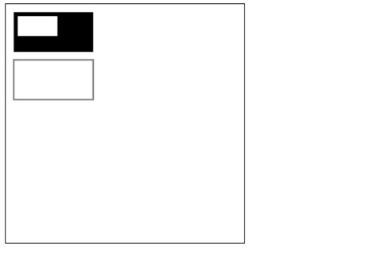
4. Dibujar rutas (path)
El elemento básico de los gráficos es la ruta.
Una ruta es un conjunto de puntos de distintas formas formado por segmentos de línea o curvas de diferentes colores y grosores que se conectan entre sí.
Una ruta, e incluso una subruta, son cerradas.
Usar rutas para dibujar formas requiere algunos pasos adicionales:
- Crear el punto de inicio de la ruta
- Llamar al método de dibujo para trazar la ruta
- Cerrar la ruta
- Una vez que se genera la ruta, se renderiza el gráfico trazando (stroke) o rellenando el área de la ruta.
A continuación se muestran los métodos necesarios:
-
beginPath()Crear una nueva ruta; una vez que la ruta se crea correctamente, los comandos de dibujo se dirigen a la ruta para generarla.
-
moveTo(x, y)Mover el lápiz a las coordenadas especificadas.
(x, y)Equivale a establecer las coordenadas del punto inicial de la ruta. -
closePath()Después de cerrar la ruta, los comandos de dibujo vuelven a apuntar al contexto.
-
stroke()Dibujar el contorno de la figura mediante líneas.
-
fill()Generar una figura sólida rellenando el área de contenido de la ruta.
4.1 Dibujar segmentos de línea
4.2 Dibujar el borde de un triángulo

4.3 Rellenar un triángulo

4.4 Dibujar arcos
Hay dos métodos para dibujar arcos:
1、arc(x, y, r, startAngle, endAngle, anticlockwise): con(x, y)como centro, conrcomo radio, desdestartAngleradianes hastaendAngleradianes.anticlosewisees un valor booleano,trueindica sentido antihorario,falseindica sentido horario (por defecto es horario).
Nota:
Aquí los grados están en radianes.
0Los radianes se refieren alxsentido positivo del eje.radians=(Math.PI/180)*degrees //角度转换成弧度
2、arcTo(x1, y1, x2, y2, radius): dibuja un arco según los puntos de control y el radio dados, y finalmente conecta los dos puntos de control con una línea recta.
Ejemplo de arco 1

Ejemplo de arco 2

Ejemplo de arco 3
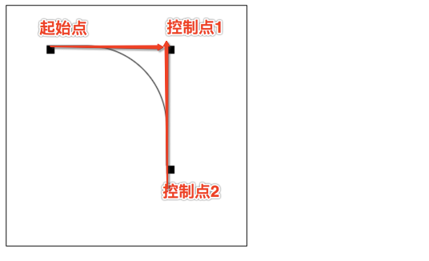
arcToDescripción del método:
Este método se puede entender así: el arco dibujado está determinado por dos líneas tangentes.
Primera tangente: la línea recta determinada por el punto inicial y el punto de control 1.
Segunda tangente: la línea recta determinada por el punto de control 1 y el punto de control 2.
En realidad, el arco dibujado es tangente a estas dos líneas rectas.
4.5 Dibujar curvas de Bézier
4.5.1 Qué es una curva de Bézier
La curva de Bézier (Bézier curve), también llamada curva de Bezier o curva Bézier, es una curva matemática aplicada en aplicaciones de gráficos bidimensionales.
El software de gráficos vectoriales en general lo usa para dibujar curvas con precisión. La curva de Bézier se compone de segmentos de línea y nodos; los nodos son puntos de apoyo arrastrables, y los segmentos son como bandas elásticas estirables. La herramienta de pluma que vemos en las herramientas de dibujo se utiliza para crear este tipo de curvas vectoriales.
La curva de Bézier es una curva paramétrica muy importante en gráficos por computadora. En algunos programas de mapas de bits bastante maduros también hay herramientas de curvas de Bézier, como PhotoShop, etc. En Flash4 aún no había una herramienta de curvas completa, pero en Flash5 ya se proporciona una herramienta de curvas de Bézier.
La curva de Bézier fue publicada ampliamente en 1962 por el ingeniero francés Pierre Bézier, quien la utilizó para diseñar la carrocería de automóviles. La curva de Bézier fue desarrollada originalmente por Paul de Casteljau en 1959 utilizando el algoritmo de Casteljau, un método numéricamente estable para obtener la curva.
Una curva de Bézier de primer grado es en realidad una línea recta.

Curva de Bézier cuadrática


Curva de Bézier cúbica

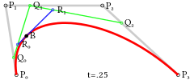
4.5.2 Dibujar curvas de Bézier
Dibujar una curva de Bézier cuadrática:
quadraticCurveTo(cp1x, cp1y, x, y)
Descripción:
- Parámetros 1 y 2: coordenadas del punto de control
- Parámetros 3 y 4: coordenadas del punto final

Dibujar una curva de Bézier cúbica:
bezierCurveTo(cp1x, cp1y, cp2x, cp2y, x, y)
Descripción:
- Parámetros 1 y 2: coordenadas del punto de control 1
- Parámetros 3 y 4: coordenadas del punto de control 2
- Parámetros 5 y 6: coordenadas del punto final

5. Agregar estilos y colores
En el capítulo anterior sobre dibujo de rectángulos, solo se usaron el trazo y el color predeterminados.
Si se desea colorear una figura, hay dos propiedades importantes que permiten hacerlo.
-
fillStyle = colorEstablecer el color de relleno de la figura. -
strokeStyle = colorEstablecer el color del contorno de la figura.
Notas:
- 1. color puede ser una cadena que represente un valor de color CSS, un objeto de degradado o un objeto de patrón.
- 2. De forma predeterminada, el trazo y el color de relleno son negros.
- 3. Una vez que se establece el valor de strokeStyle o fillStyle, este nuevo valor se convertirá en el valor predeterminado para las figuras recién dibujadas. Si desea dar a cada figura un color diferente, necesita volver a establecer el valor de fillStyle o strokeStyle.
fillStyle
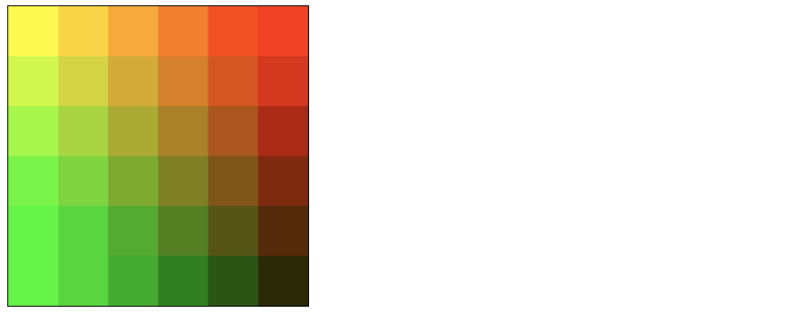
strokeStyle

Transparency (transparencia)
globalAlpha = transparencyValue: esta propiedad afecta la transparencia de todas las figuras en el canvas. El rango de valores válidos es de 0.0 (totalmente transparente) a 1.0 (totalmente opaco), el valor predeterminado es 1.0.
globalAlphaEsta propiedad es bastante eficiente cuando se necesita dibujar muchas figuras con la misma transparencia. Sin embargo, creo que es mejor usar rgba() para establecer la transparencia.
1、line style
Ancho de línea. Solo puede ser un valor positivo. El valor predeterminado es 1.0.
La línea entre el punto inicial y el punto final es el centro,cada lado ocupa la mitad del ancho de línea.。
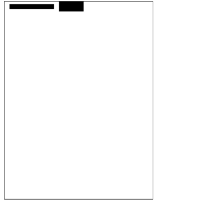
2. lineCap = type
Estilo de los extremos de la línea.
Hay 3 valores:
-
butt: el extremo del segmento termina en forma de cuadrado. -
round: el extremo del segmento termina en forma de círculo. square: el extremo del segmento termina en forma de cuadrado, pero se agrega un área rectangular con el mismo ancho que el segmento y una altura igual a la mitad del grosor del segmento.var lineCaps = ["butt", "round", "square"]; for (var i = 0; i < 3; i++){ ctx.beginPath(); ctx.moveTo(20 + 30 * i, 30); ctx.lineTo(20 + 30 * i, 100); ctx.lineWidth = 20; ctx.lineCap = lineCaps[i]; ctx.stroke(); } ctx.beginPath(); ctx.moveTo(0, 30); ctx.lineTo(300, 30); ctx.moveTo(0, 100); ctx.lineTo(300, 100) ctx.strokeStyle = "red"; ctx.lineWidth = 1; ctx.stroke();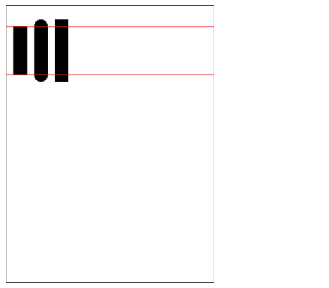
3. lineJoin = type
Dentro de la misma ruta (path), establece el estilo de las uniones entre líneas.
Hay 3 valores.
round,bevel和miter：-
roundDibuja la forma de la esquina rellenando un sector adicional cuyo centro está en el extremo de la parte conectada. El radio de la esquina redondeada es el ancho del segmento. -
bevelRellena un área adicional con base triangular en el extremo de la parte conectada; cada parte tiene su propia esquina rectangular independiente. -
miter(Predeterminado) Al extender los bordes exteriores de las partes conectadas hasta que se intersecten en un punto, se forma un área adicional en forma de rombo.function draw(){ var canvas = document.getElementById('tutorial'); if (!canvas.getContext) return; var ctx = canvas.getContext("2d"); var lineJoin = ['round', 'bevel', 'miter']; ctx.lineWidth = 20; for (var i = 0; i < lineJoin.length; i++){ ctx.lineJoin = lineJoin[i]; ctx.beginPath(); ctx.moveTo(50, 50 + i * 50); ctx.lineTo(100, 100 + i * 50); ctx.lineTo(150, 50 + i * 50); ctx.lineTo(200, 100 + i * 50); ctx.lineTo(250, 50 + i * 50); ctx.stroke(); } } draw(); -
fillText(text, x, y [, maxWidth])Rellena el texto especificado en la posición (x, y); el ancho máximo de dibujo es opcional. -
strokeText(text, x, y [, maxWidth])Dibuja el borde del texto en la posición (x, y); el ancho máximo de dibujo es opcional.var ctx; function draw(){ var canvas = document.getElementById('tutorial'); if (!canvas.getContext) return; ctx = canvas.getContext("2d"); ctx.font = "100px sans-serif" ctx.fillText("Si el cielo tiene sentimientos", 10, 100); ctx.strokeText("Si el cielo tiene sentimientos", 10, 200) } draw(); -
font = valueEl estilo que usamos actualmente para dibujar texto. Esta cadena usa la misma sintaxis queCSS fontla propiedad. La fuente predeterminada es10px sans-serif。 -
textAlign = valueOpciones de alineación del texto. Los valores posibles incluyen:start,end,left,rightorcenter. El valor predeterminado esstart。 -
textBaseline = valueOpciones de alineación de la línea base. Los valores posibles incluyen:top,hanging,middle,alphabetic,ideographic,bottom. El valor predeterminado esalphabetic。。 -
direction = valueDirección del texto. Los valores posibles incluyen:ltr,rtl,inherit. El valor predeterminado esinherit。 -
Las transformaciones aplicadas actualmente (es decir, traslación, rotación y escala)
-
strokeStyle,fillStyle,globalAlpha,lineWidth,lineCap,lineJoin,miterLimit,shadowOffsetX,shadowOffsetY,shadowBlur,shadowColor,globalCompositeOperation 的值 -
La ruta de recorte actual (
clipping path）
Se puede llamar cualquier cantidad de veces
savemétodo (similar al de los arrayspush())。 - a (m11): Horizontal scaling.
- b (m12): Horizontal skewing.
- c (m21): Vertical skewing.
- d (m22): Vertical scaling.
- e (dx): Horizontal moving.
- f (dy): Vertical moving.
Limpiar
canvasAntes de dibujar cada fotograma de la animación, es necesario limpiar todo. La forma más sencilla de limpiar todo esclearRect()el método.Guardar
canvasel estadoSi durante el proceso de dibujo se va a cambiar elcanvasestado (color, traslación del origen de coordenadas, etc.), y además cada fotograma debe comenzar desde el estado original, es mejor guardar elcanvasestadoDibujar los gráficos de la animaciónEste paso es el que realmente dibuja los fotogramas de la animación.
Restaurar
canvasel estadoSi antes has guardado elcanvasestado, debes restaurarlo después de terminar de dibujar un fotograma.canvasel estado.setInterval()setTimeout()requestAnimationFrame()
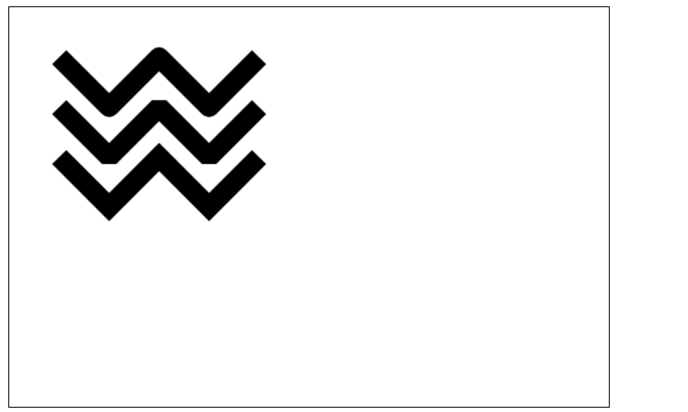
4. Línea discontinua
用
setLineDashEl método ylineDashOffsetla propiedad para definir el estilo de línea discontinua.setLineDashEl método acepta un array para especificar la alternancia entre segmentos y espacios;lineDashOffsetla propiedad establece el desplazamiento inicial.function draw(){ var canvas = document.getElementById('tutorial'); if (!canvas.getContext) return; var ctx = canvas.getContext("2d"); ctx.setLineDash([20, 5]); //[longitud de línea sólida, longitud de espacio] ctx.lineDashOffset = -0; ctx.strokeRect(50, 50, 210, 210); } draw();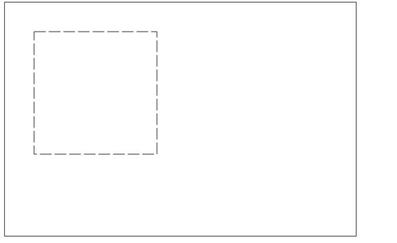
Nota: getLineDash() devuelve un array que contiene el estilo de línea discontinua actual, con una longitud no negativa y par.
6. Dibujar texto
Dos métodos para dibujar texto
canvas proporciona dos métodos para renderizar texto:
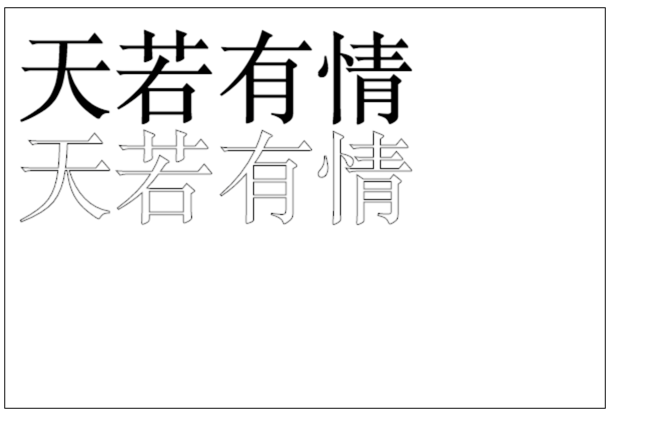
Agregar estilos al texto
7. Dibujar imágenes
También podemos
canvasdibujar imágenes directamente en el canvas.7.1 Crear una imagen desde cero
var img = new Image(); //Crear un elemento <img> img.src = 'myImage.png'; //Establecer la dirección de origen de la imagen.Después de ejecutar el script, la imagen comienza a cargarse.
Dibujar
img// 参数 1：要绘制的 img // 参数 2、3：绘制的 img 在 canvas 中的坐标 ctx.drawImage(img,0,0);
Nota: Teniendo en cuenta que la imagen se carga desde la red, si
drawImageal momento de dibujar la imagen aún no se ha cargado por completo, no se hace nada; algunos navegadores lanzarán una excepción. Por lo tanto, debemos asegurarnos de que después deimgque la imagen se haya dibujado por completo, entoncesdrawImage。var img = new Image(); //Crear el elemento img img.onload = function(){ ctx.drawImage(img, 0, 0) } img.src = 'myImage.png'; //Establecer la dirección de origen de la imagen.7.2 Dibujar
imglas imágenes del elemento de etiqueta
imgSe puedenewo también puede provenir de la<img>etiqueta de nuestra página.<img src="./美女.jpg" alt="" width="300"><br> <canvas id="tutorial" width="600" height="400"></canvas> function draw(){ var canvas = document.getElementById('tutorial'); if (!canvas.getContext) return; var ctx = canvas.getContext("2d"); var img = document.querySelector("img"); ctx.drawImage(img, 0, 0); } document.querySelector("img").onclick = function (){ draw(); }La primera imagen es la
<img>etiqueta de la página: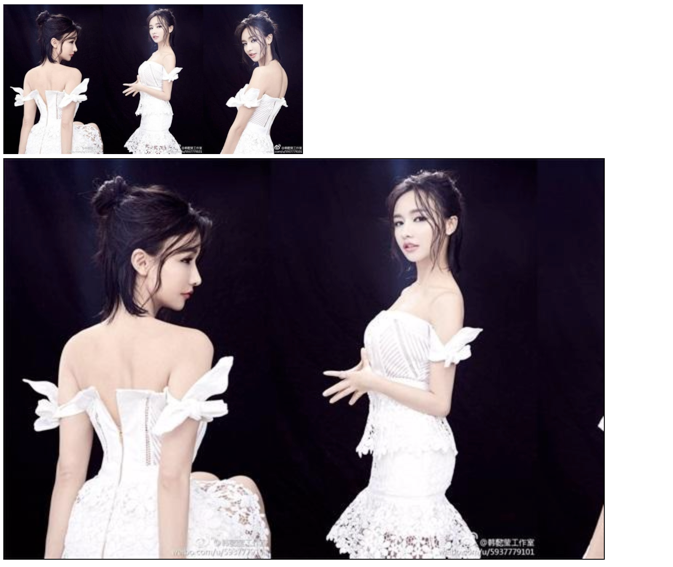
7.3 Escalar imágenes
drawImage()También se pueden agregar dos parámetros más:drawImage(image, x, y, width, height)
Este método tiene 2 parámetros adicionales:
width和heightEstos dos parámetros se usan para controlar el tamaño de escala que debe aplicarse al dibujar en el canvas.ctx.drawImage(img, 0, 0, 400, 200)
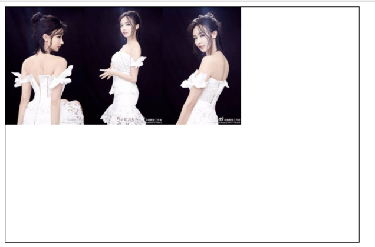
7.4 Recorte (slice)
drawImage(image, sx, sy, sWidth, sHeight, dx, dy, dWidth, dHeight)
El primer parámetro es igual que los demás: es una referencia a una imagen u otro canvas.
Los otros 8 parámetros:
Los primeros 4 definen la posición y el tamaño del recorte en la imagen de origen, y los últimos 4 definen la posición y el tamaño de visualización del recorte en el destino.

8. Guardar y restaurar el estado
Saving and restoring stateEs una operación esencial al dibujar gráficos complejos.save()和restore()save和restoreEl método se utiliza para guardar y restaurarcanvasel estado, y ninguno tiene parámetros.
CanvasEl estado es una instantánea de todos los estilos y transformaciones aplicados al lienzo actual.1. Acerca de save(): el estado del Canvas se almacena en una pila. Cada vez que se llama al método save(), el estado actual se inserta en la pila y se guarda.
Un estado de dibujo incluye:
Se puede llamar cualquier cantidad de veces
savemétodo(similar al de los arrayspush())。2. Acerca de restore(): cada vez que se llama al método restore, el último estado guardado se extrae de la pila y se restauran todos los ajustes (similar al de los arrays
pop())。var ctx; function draw(){ var canvas = document.getElementById('tutorial'); if (!canvas.getContext) return; var ctx = canvas.getContext("2d"); ctx.fillRect(0, 0, 150, 150); //Dibujar un rectángulo con la configuración predeterminada ctx.save(); //Guardar el estado predeterminado ctx.fillStyle = 'red' //Cambiar el color sobre la configuración original ctx.fillRect(15, 15, 120, 120); //Dibujar un rectángulo con la nueva configuración ctx.save(); //Guardar el estado actual ctx.fillStyle = '#FFF' //Cambiar de nuevo la configuración de color ctx.fillRect(30, 30, 90, 90); //Dibujar un rectángulo con la nueva configuración ctx.restore(); //Recargar el estado de color anterior ctx.fillRect(45, 45, 60, 60); //Dibujar un rectángulo con la configuración anterior ctx.restore(); //Cargar la configuración de color predeterminada ctx.fillRect(60, 60, 30, 30); //Dibujar un rectángulo con la configuración cargada } draw();
9. Transformaciones
9.1 translate
translate(x, y)Se utiliza para mover
canvas的el origena la posición especificada
translateEl método acepta dos parámetros.xes el desplazamiento horizontal,yes el desplazamiento vertical, como se muestra en la figura de la derecha.Guardar el estado antes de aplicar una transformación es una buena práctica. En la mayoría de los casos, llamar al
restoremétodo es mucho más simple que restaurar manualmente el estado original. Además, si estás haciendo desplazamientos en un bucle sin guardar y restaurarcanvasel estado, es probable que al final descubras que algunas cosas han desaparecido, porque es posible que hayan salido delcanvasrango.Nota:
translateLo que se mueve escanvasel origen de coordenadas (transformación de coordenadas). var ctx; function draw(){ var canvas = document.getElementById('tutorial1'); if (!canvas.getContext) return; var ctx = canvas.getContext("2d"); ctx.save(); //Guardar el estado antes de la traslación del origen de coordenadas ctx.translate(100, 100); ctx.strokeRect(0, 0, 100, 100) ctx.restore(); //Restaurar al estado inicial ctx.translate(220, 220); ctx.fillRect(0, 0, 100, 100) } draw();
var ctx; function draw(){ var canvas = document.getElementById('tutorial1'); if (!canvas.getContext) return; var ctx = canvas.getContext("2d"); ctx.save(); //Guardar el estado antes de la traslación del origen de coordenadas ctx.translate(100, 100); ctx.strokeRect(0, 0, 100, 100) ctx.restore(); //Restaurar al estado inicial ctx.translate(220, 220); ctx.fillRect(0, 0, 100, 100) } draw();
9.2 rotate
rotate(angle)
Rotar el eje de coordenadas.
Este método solo acepta un parámetro: el ángulo de rotación (angle), que es en el sentido de las agujas del reloj y se expresa en radianes.
El centro de rotación es el origen de coordenadas.
 var ctx; function draw(){ var canvas = document.getElementById('tutorial1'); if (!canvas.getContext) return; var ctx = canvas.getContext("2d"); ctx.fillStyle = "red"; ctx.save(); ctx.translate(100, 100); ctx.rotate(Math.PI / 180 * 45); ctx.fillStyle = "blue"; ctx.fillRect(0, 0, 100, 100); ctx.restore(); ctx.save(); ctx.translate(0, 0); ctx.fillRect(0, 0, 50, 50) ctx.restore(); } draw();
var ctx; function draw(){ var canvas = document.getElementById('tutorial1'); if (!canvas.getContext) return; var ctx = canvas.getContext("2d"); ctx.fillStyle = "red"; ctx.save(); ctx.translate(100, 100); ctx.rotate(Math.PI / 180 * 45); ctx.fillStyle = "blue"; ctx.fillRect(0, 0, 100, 100); ctx.restore(); ctx.save(); ctx.translate(0, 0); ctx.fillRect(0, 0, 50, 50) ctx.restore(); } draw();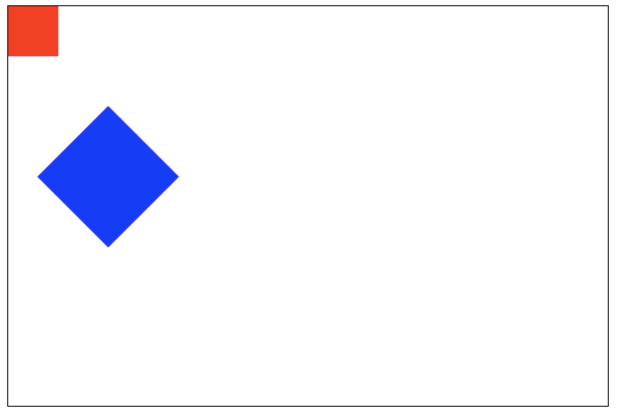
9.3 scale
scale(x, y)
Lo usamos para aumentar o disminuir el número de píxeles de los gráficos en
canvasel canvas, reduciendo o ampliando formas y mapas de bits.scaleEl método acepta dos parámetros.x,ySon los factores de escala de los ejes horizontal y vertical, y ambos deben ser valores positivos. Un valor menor que 1.0 indica reducción, mayor que 1.0 indica ampliación, y un valor de 1.0 no produce ningún efecto.De forma predeterminada,
canvas1 unidad es 1 píxel. Por ejemplo, si establecemos el factor de escala en 0.5, 1 unidad pasa a corresponder a 0.5 píxeles, por lo que la forma dibujada será la mitad del tamaño original. Del mismo modo, si se establece en 2.0, 1 unidad corresponde a 2 píxeles, y el resultado del dibujo es que la figura se amplía 2 veces.9.4 transform (matriz de transformación)
transform(a, b, c, d, e, f)
 var ctx; function draw(){ var canvas = document.getElementById('tutorial1'); if (!canvas.getContext) return; var ctx = canvas.getContext("2d"); ctx.transform(1, 1, 0, 1, 0, 0); ctx.fillRect(0, 0, 100, 100); } draw();
var ctx; function draw(){ var canvas = document.getElementById('tutorial1'); if (!canvas.getContext) return; var ctx = canvas.getContext("2d"); ctx.transform(1, 1, 0, 1, 0, 0); ctx.fillRect(0, 0, 100, 100); } draw();
10. Composición
En todos los ejemplos anteriores, siempre dibujamos una figura sobre otra; para muchos otros casos, esto no es suficiente. Por ejemplo, para las figuras compuestas, el orden de dibujo puede tener limitaciones. Sin embargo, podemos usar la propiedad globalCompositeOperation para cambiar esta situación.
globalCompositeOperation = type
var ctx; function draw(){ var canvas = document.getElementById('tutorial1'); if (!canvas.getContext) return; var ctx = canvas.getContext("2d"); ctx.fillStyle = "blue"; ctx.fillRect(0, 0, 200, 200); ctx.globalCompositeOperation = "source-over"; //Operaciones de composición global ctx.fillStyle = "red"; ctx.fillRect(100, 100, 200, 200); } draw();注En las siguientes demostraciones, el azul es el color existente y el rojo es el nuevo.
type es uno de los siguientes 13 valores de cadena:
1. Esta es la configuración predeterminada: la imagen nueva se superpone a la imagen existente.

2. source-in
Solo aparecerá la parte en la que la imagen nueva se superpone a la imagen original; el resto de las áreas se vuelven transparentes. (Incluyendo otras áreas de la imagen anterior, que también se vuelven transparentes).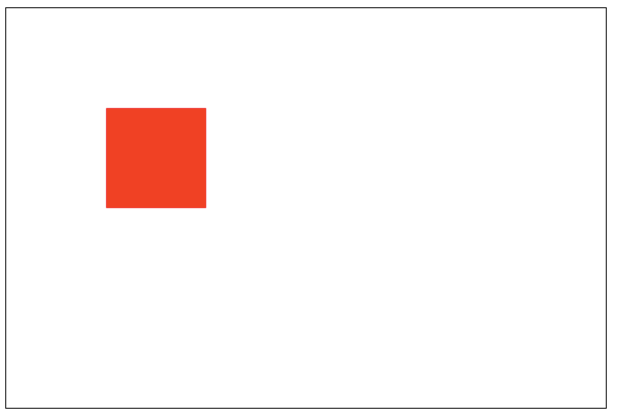
3. source-out
Solo se muestra la parte de la imagen nueva que no se superpone con la imagen anterior; el resto es completamente transparente. (La imagen anterior tampoco se muestra).

4. source-atop
La imagen nueva solo muestra el área de superposición con la imagen anterior. La imagen anterior todavía puede mostrarse.

5. destination-over
La imagen nueva se coloca debajo de la imagen anterior.
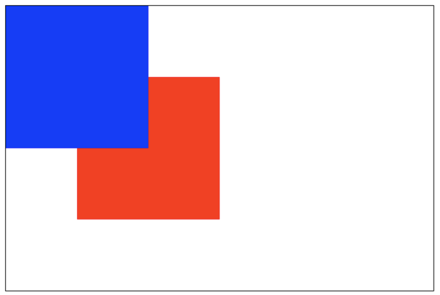
6. destination-in
Solo se muestra la parte de la imagen anterior que se superpone con la imagen nueva; el resto de las áreas son completamente transparentes.
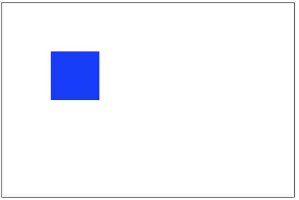
7. destination-out
Solo se muestra la parte de la imagen anterior que no se superpone con la imagen nueva. Ten en cuenta que se muestra una parte de la imagen anterior.

8. destination-atop
La imagen anterior solo muestra la parte superpuesta, y la imagen nueva se muestra debajo de la imagen anterior.

9. lighter
Tanto la imagen nueva como la anterior se muestran, pero el color del área superpuesta se procesa como una suma.

10. darken
Se conserva el píxel más oscuro de la parte superpuesta. (Se compara cada bit de color y se obtiene el más pequeño).
blue: #0000ff red: #ff0000
Por lo tanto, el color de la parte superpuesta es:#000000。
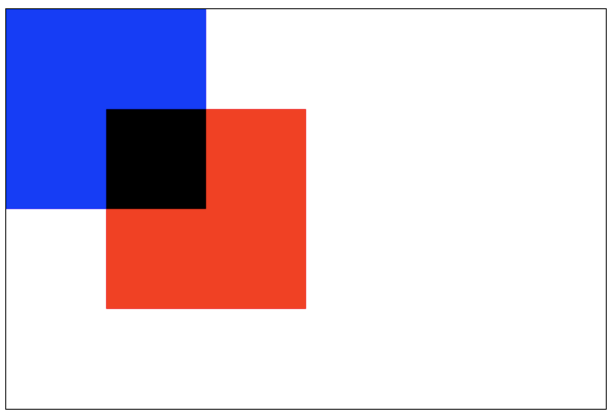
11. lighten
Se conserva el píxel más claro de la parte superpuesta. (Se compara cada bit de color y se obtiene el más grande).
blue: #0000ff red: #ff0000
Por lo tanto, el color de la parte superpuesta es:#ff00ff。

12. xor
La parte superpuesta se vuelve transparente.
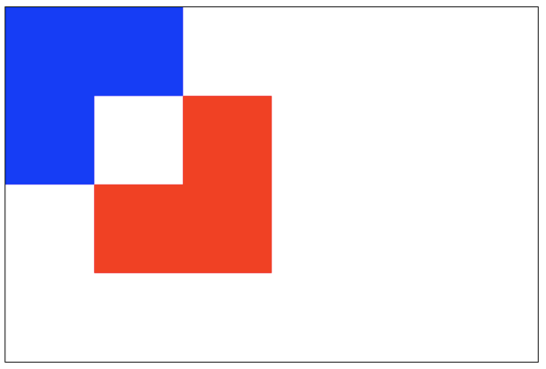
13. copy
Solo se conserva la imagen nueva; el resto se elimina por completo (se vuelve transparente).

11. Rutas de recorte
clip()
Convierte la ruta ya creada en una ruta de recorte.
La función de la ruta de recorte es actuar como máscara. Solo se muestra el área dentro de la ruta de recorte; el área fuera de la ruta de recorte queda oculta.
Nota:clip() solo puede enmascarar las imágenes dibujadas después de llamar a este método; si la imagen se dibujó antes de la llamada a clip(), no se puede enmascarar.
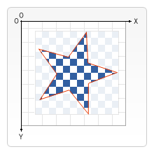
var ctx; function draw(){ var canvas = document.getElementById('tutorial1'); if (!canvas.getContext) return; var ctx = canvas.getContext("2d"); ctx.beginPath(); ctx.arc(20,20, 100, 0, Math.PI * 2); ctx.clip(); ctx.fillStyle = "pink"; ctx.fillRect(20, 20, 100,100); } draw();
12. Animación
Pasos básicos de la animación
Control de la animación
Podemos usar
canvasel método o métodos personalizados para dibujar la imagen encanvasel canvas. Normalmente, podemos ver el resultado del dibujo después de que el script haya terminado de ejecutarse. Por ejemplo, no podemos completar una animación dentro de unforbucle.Es decir, para ejecutar una animación, necesitamos métodos que puedan ejecutar el redibujado periódicamente.
Generalmente se usan los siguientes tres métodos:
Ejemplo 1: Sistema solar
let sun; let earth; let moon; let ctx; function init(){ sun = new Image(); earth = new Image(); moon = new Image(); sun.src = "sun.png"; earth.src = "earth.png"; moon.src = "moon.png"; let canvas = document.querySelector("#solar"); ctx = canvas.getContext("2d"); sun.onload = function (){ draw() } } init(); function draw(){ ctx.clearRect(0, 0, 300, 300); //Limpiar todo el contenido /*Dibujar el Sol*/ ctx.drawImage(sun, 0, 0, 300, 300); ctx.save(); ctx.translate(150, 150); //Dibujar la órbita de la Tierra ctx.beginPath(); ctx.strokeStyle = "rgba(255,255,0,0.5)"; ctx.arc(0, 0, 100, 0, 2 * Math.PI) ctx.stroke() let time = new Date(); //Dibujar la Tierra ctx.rotate(2 * Math.PI / 60 * time.getSeconds() + 2 * Math.PI / 60000 * time.getMilliseconds()) ctx.translate(100, 0); ctx.drawImage(earth, -12, -12) //Dibujar la órbita de la Luna ctx.beginPath(); ctx.strokeStyle = "rgba(255,255,255,.3)"; ctx.arc(0, 0, 40, 0, 2 * Math.PI); ctx.stroke(); //Dibujar la Luna ctx.rotate(2 * Math.PI / 6 * time.getSeconds() + 2 * Math.PI / 6000 * time.getMilliseconds()); ctx.translate(40, 0); ctx.drawImage(moon, -3.5, -3.5); ctx.restore(); requestAnimationFrame(draw); }
Ejemplo 2: Reloj analógico
init(); function init(){ let canvas = document.querySelector("#solar"); let ctx = canvas.getContext("2d"); draw(ctx); } function draw(ctx){ requestAnimationFrame(function step(){ drawDial(ctx); //Dibujar la esfera del reloj drawAllHands(ctx); //Dibujar las manecillas de hora, minuto y segundo requestAnimationFrame(step); }); } /*Dibujar las manecillas de hora, minuto y segundo*/ function drawAllHands(ctx){ let time = new Date(); let s = time.getSeconds(); let m = time.getMinutes(); let h = time.getHours(); let pi = Math.PI; let secondAngle = pi / 180 * 6 * s; //Calcular el ángulo en radianes de la manecilla de segundos. let minuteAngle = pi / 180 * 6 * m + secondAngle / 60; //Calcular el ángulo en radianes del minutero. let hourAngle = pi / 180 * 30 * h + minuteAngle / 12; //Calcular el ángulo en radianes de la manecilla de las horas. drawHand(hourAngle, 60, 6, "red", ctx); //Dibujar la manecilla de las horas drawHand(minuteAngle, 106, 4, "green", ctx); //Dibujar el minutero drawHand(secondAngle, 129, 2, "blue", ctx); //Dibujar el segundero } /*Dibujar la manecilla de las horas, o el minutero, o el segundero * Parámetro 1: el ángulo de la manecilla a dibujar * Parámetro 2: la longitud de la manecilla a dibujar * Parámetro 3: el ancho de la manecilla a dibujar * Parámetro 4: el color de la manecilla a dibujar * Parámetro 4: ctx **/ function drawHand(angle, len, width, color, ctx){ ctx.save(); ctx.translate(150, 150); //Trasladar el origen del eje de coordenadas al centro original. ctx.rotate(-Math.PI / 2 + angle); //Rotar el eje de coordenadas. El eje x es el ángulo de la manecilla. ctx.beginPath(); ctx.moveTo(-4, 0); ctx.lineTo(len, 0); //Dibujar la manecilla a lo largo del eje x. ctx.lineWidth = width; ctx.strokeStyle = color; ctx.lineCap = "round"; ctx.stroke(); ctx.closePath(); ctx.restore(); } /*Dibujar la esfera del reloj*/ function drawDial(ctx){ let pi = Math.PI; ctx.clearRect(0, 0, 300, 300); //Limpiar todo el contenido ctx.save(); ctx.translate(150, 150); //Mover el origen de coordenadas al centro original. ctx.beginPath(); ctx.arc(0, 0, 148, 0, 2 * pi); //Dibujar la circunferencia ctx.stroke(); ctx.closePath(); for (let i = 0; i < 60; i++){//Dibujar las marcas de graduación. ctx.save(); ctx.rotate(-pi / 2 + i * pi / 30); //Rotar el eje de coordenadas. La dirección positiva del eje x se cuenta desde arriba. ctx.beginPath(); ctx.moveTo(110, 0); ctx.lineTo(140, 0); ctx.lineWidth = i % 5 ? 2 : 4; ctx.strokeStyle = i % 5 ? "blue" : "red"; ctx.stroke(); ctx.closePath(); ctx.restore(); } ctx.restore(); }
Pruébalo »
Autor original: 做人要厚道2013
URL original: https://blog.csdn.net/u012468376/article/details/73350998
-
Haz clic para compartir notas
<p style="font-size:14px;">¡Las notas deben ser una extensión del contenido de este artículo!</p><br> <p style="font-size:12px;"><a href="../tougao.html" target="_blank">Para enviar artículos, haz clic aquí</a></p> <p style="font-size:14px;"><a href="./runoob-user-test-intro.html" target="_blank">Cómo obtener el código de invitación de registro</a></p> <h3 class="text-muted"><i class="fa fa-info-circle" aria-hidden="true"></i> ¡Antes de compartir notas debes <a href=".." class="runoob-pop">iniciar sesión</a>!</h3> <p><a href="./runoob-user-test-intro.html" target="_blank">Cómo obtener el código de invitación de registro</a></p>